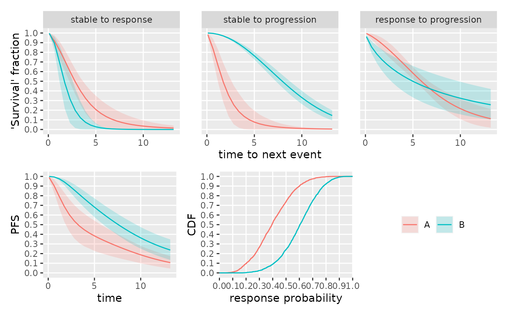
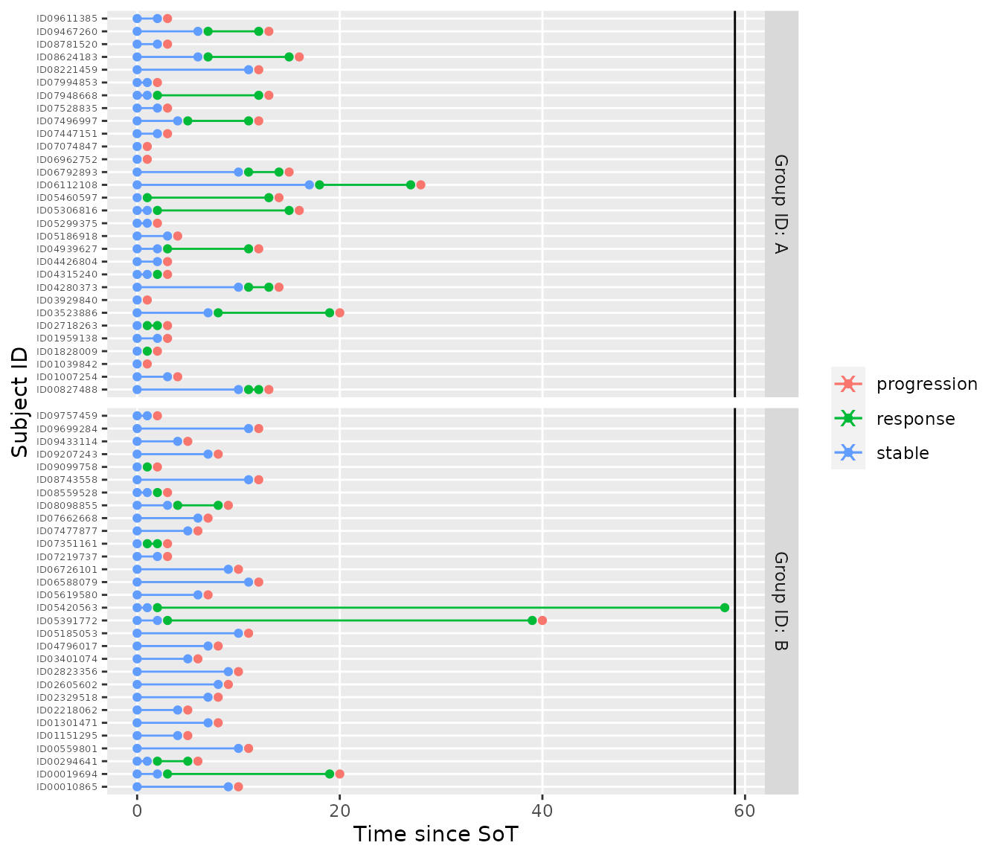
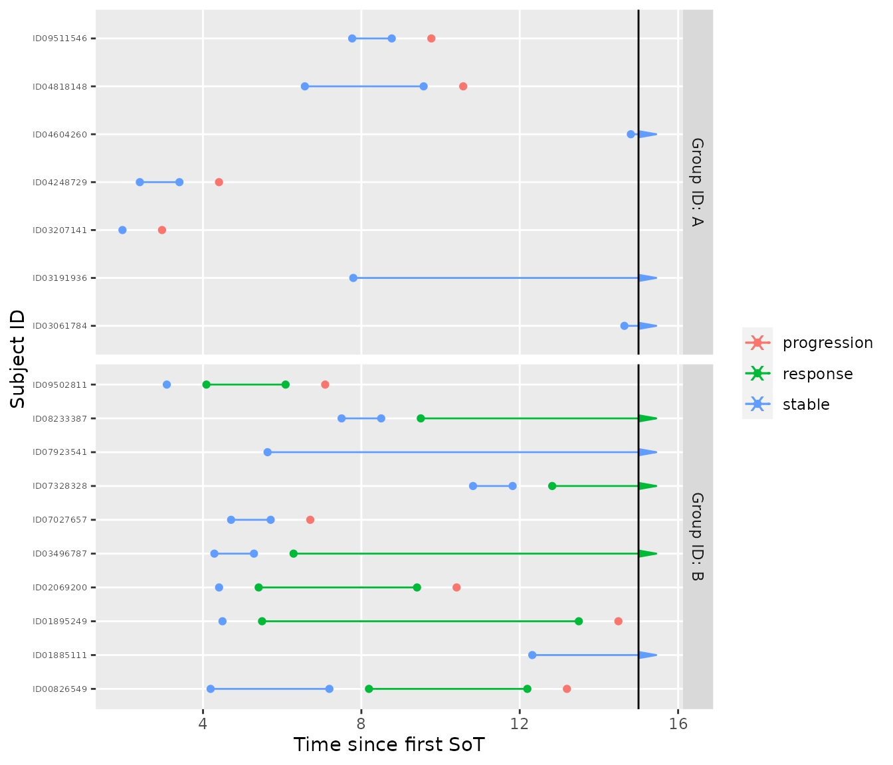
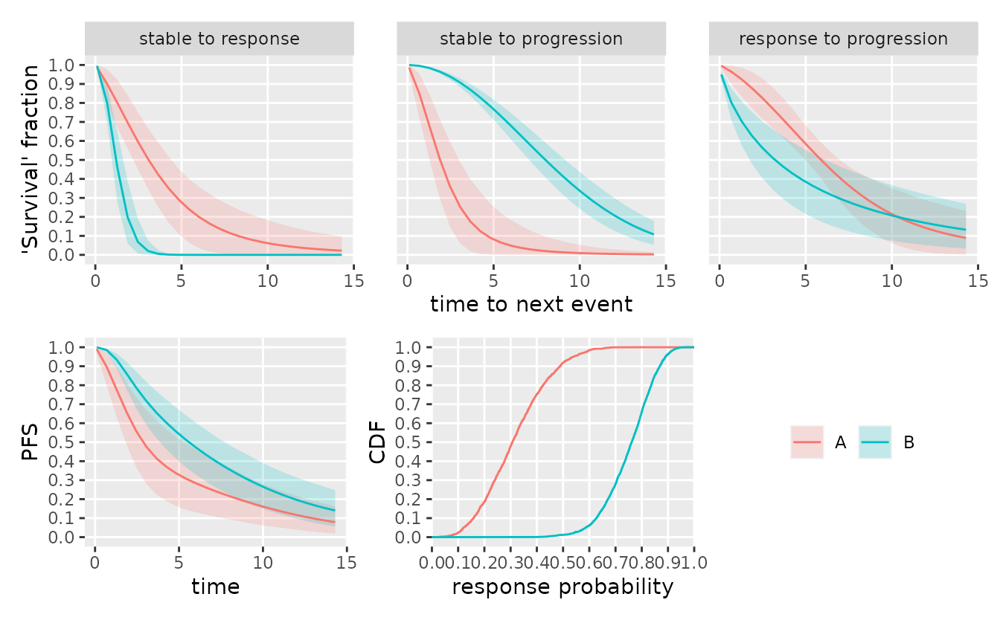

tl;dr: The multi-state characteristics of RECIST-like visit data in oncology can be exploited to reduce bias at interim analyses of objective response rate and drive event prediction for probability of success calculations.
In early oncology trials, (objective tumor) response based on the RECIST criteria is often used as primary endpoint to establish the activity of a treatment. Often, response is treated as binary variable although it is a delayed event endpoint. At the final analysis, this simplification is of little concern since all individuals tend to be followed up long enough to ignore the small amount of censoring. However, when continuously monitoring such a trial, the assumption of sufficient follow-up is no longer fulfilled at interim analyses and a simple binary analysis is biased.
The problem can be addressed by extending the statistic binary response model to a three-state model for “stable”, “response”, and “progression or death”. The respective transition numbers are given in the graph below.
Often, a hazard-based approach is used to model multi-state data. However, a hazard-based approach has several disadvantages:
The hazard scale is difficult to interpret since it is a momentary risk, not a probability. This leads to problems with prior specification in a Bayesian setting. The Bayesian approach is, however, particularly useful in the early development process since it allows to augment data with prior opinion or evidence and thus improve accuracy.
A hazard based, non-Markov multi-state model leads to intractable expressions for the implicitly given transition probabilities. Hence they need to be calculated by simulation which makes the model less convenient to work with if transition probabilities a or of primary interest. Since the (objective) response rate often plays an important role in the analysis of early oncology trials, this is a disadvantage.
An alternative framework to model multi-state data are mixture models. For details, see Jackson et al. (2022) and Jackson (2022). Here, we describe the concrete application to he simplified “stable”, “response”, “progression” model. The approach is similar to Aubel et al. (2021) and Beyer et al. (2020).
Here, a semi-Markov approach is used. This means that the time to the next transition only depends on the time already spent in a state, not on the full history of previous jumps. Additionally, it is assumed that the transition times between states conditional on both originating and target state can be described by Weibull distributions. This parametric family encompasses the exponential distribution with constant transition rates as special cases but also allows increasing or decreasing hazards over time.
Let \(T_{S}\) be the transition time from the “stable” state and \(T_{R}\) the transition tome from the “response” state (also “sojourn” times). Let further \(R\) be a binary random variable with \(R=1\) if a response occurs, then the model can be specified as:
\[ \begin{align} R &\sim \operatorname{Bernoulli}(p) \\ T_{S} \,|\, R = 1 &\sim \operatorname{Weibull}(k_1, \lambda_1) \\ T_{S} \,|\, R = 0 &\sim \operatorname{Weibull}(k_2, \lambda_2) \\ T_{R} &\sim \operatorname{Weibull}(k_3, \lambda_3) \end{align} \] where \(k\) is the vector of shape- and \(\lambda\) the vector of scale parameters. Let further \(f_i(t)\) be the PDF of the Weibull distribution of transition \(i\in\{1,2,3\}\) as indicated in the above figure and let \(F_i(t)\) the corresponding CDF. This model implies that \[ \operatorname{Pr}\big[\,T_{S} > t \,\big] = p\cdot(1 - F_1(t)) + (1 - p)\cdot(1 - F_2(t))\\ \] hence, it can be seen as a mixture model.
The median of a Weibull-distributed random variable is directly related to shape and scale parameters. Since the former is more convenient to interpret, the Weibull distributions are parameterized directly via their shape and median. The scale parameter can then be recovered via the relationship
\[ \operatorname{scale} = \frac{\operatorname{median}}{\log(2)^{1/\operatorname{shape}}} . \]
The following priors are used:
- a normal prior for the log-odds of response \(\operatorname{logit}(p) \sim \mathcal{N}(\mu_p,\sigma_p^2)\)
- a truncated normal prior for the median of each transition \(\operatorname{median}_{\,i} \sim \mathcal{N}(\mu_i,\sigma_i^2)[\,0,\infty)\)
- a flat prior on the shape of each transition \(\operatorname{shape}_{\,i} \sim \operatorname{Uniform}(a_i, b_i)\)
- it is assumed that the observation process (visit spacing) is fixed, e.g. every 6 weeks. This means that all transition times are interval censored.
We treat recruitment times as independent of outcome. They can be modeled separately if required.
We assume that all times are given in months.
Specifying the model
The following code defined the prior assumptions for a two-group trial with a visit-spacing of 1.2 months, i.e., about 6 weeks.
mdl <- create_srp_model(
# names of the arms/groups
group_id = c("control", "intervention"),
# per-group logodds of response|stable
logodds_mean = c(logodds(.4), logodds(.6)),
logodds_sd = c(1, 1),
# m[i,j] is the median time to next event for group i and transition j
median_time_to_next_event = matrix(c(
3, 2, 6,
2, 8, 12
), byrow = TRUE, nrow = 2, ncol = 3),
# fixed standard deviation of the prior for all median times
median_time_to_next_event_sd = matrix(
1,
byrow = TRUE, nrow = 2, ncol = 3
),
# the visit interval
visit_spacing = c(1.2, 1.2)
)
print(mdl)
#> srp_model<control,intervention>The model assumptions can be visualized by sampling from the prior.
Prior checks
First, we plot the cumulative distribution functions (CDF) of the time-to-next-event over the first 36 (months) and the CDF of the response probabilities per group. These are based on a sample drawn from the prior distribution of the model. We can re-use the same parameter sample for sampling from the prior-predictive distribution by separating the sampling from the plotting steps.
Often, the rate of progression free survival (PFS) at a particular time point is of interest. This quantity is a direct function of the model parameters. Since the simplified model does not distinguish between progression or death, we denote the combined endpoint as “progression”. \[ \begin{align} \operatorname{PFS}(t) :&= \operatorname{Pr}\big[\,\text{no progression before } t\,\big] \\ &= 1 - \operatorname{Pr}\big[\,\text{progression before } t\,] \\ &= 1 - \operatorname{Pr}\big[\,\text{progression before } t\,|\, \text{response}\,]\cdot\operatorname{Pr}\big[\,\text{response}\,] \\ &\qquad- \operatorname{Pr}\big[\,\text{progression before } t\,|\, \text{no response}\,]\cdot\operatorname{Pr}\big[\,\text{no response}\,] \\ &= 1 - p\cdot\int_0^t f_1(u) \cdot F_2(t - u) \operatorname{d}u - (1 - p)\cdot F_3(t) \ . \end{align} \] The integral arises from the need to reflect the uncertainty over the state change from “stable” to “response” on the way to “progression”. Any parameter sample thus also induces a sample of the PFS rate at any given time point and the curve of PFS rate over time corresponds to the survival function of the “progression or death” event.
smpl_prior <- sample_prior(mdl, seed = 36L)
plot(mdl, dt = c(0, 36), sample = smpl_prior)
Sampling from the prior-predictive distribution
Next, we draw samples from the prior-predictive distribution of the model. We sample 100 trials with 30 individuals per arm. Here, we can re-use the sample prior sample already used for plotting.
tbl_prior_predictive <- sample_predictive(
mdl,
sample = smpl_prior,
n_per_group = c(30L, 30L),
nsim = 100,
seed = 342
)
print(tbl_prior_predictive, n = 25)
#> # A tibble: 67,938 × 5
#> subject_id group_id t state iter
#> <chr> <chr> <dbl> <chr> <int>
#> 1 ID00010865 intervention 11.2 stable 1
#> 2 ID00010865 intervention 12.4 stable 1
#> 3 ID00010865 intervention 13.6 stable 1
#> 4 ID00010865 intervention 14.8 response 1
#> 5 ID00010865 intervention 16.0 response 1
#> 6 ID00010865 intervention 17.2 response 1
#> 7 ID00010865 intervention 18.4 response 1
#> 8 ID00010865 intervention 19.6 response 1
#> 9 ID00010865 intervention 20.8 response 1
#> 10 ID00010865 intervention 22.0 response 1
#> 11 ID00010865 intervention 23.2 response 1
#> 12 ID00010865 intervention 24.4 response 1
#> 13 ID00010865 intervention 25.6 response 1
#> 14 ID00010865 intervention 26.8 response 1
#> 15 ID00010865 intervention 28.0 response 1
#> 16 ID00010865 intervention 29.2 response 1
#> 17 ID00010865 intervention 30.4 response 1
#> 18 ID00010865 intervention 31.6 response 1
#> 19 ID00010865 intervention 32.8 response 1
#> 20 ID00010865 intervention 34.0 response 1
#> 21 ID00010865 intervention 35.2 response 1
#> 22 ID00010865 intervention 36.4 response 1
#> 23 ID00010865 intervention 37.6 response 1
#> 24 ID00010865 intervention 38.8 response 1
#> 25 ID00010865 intervention 40.0 response 1
#> # … with 67,913 more rowsWe can then run some quick checks on the sampled data, e.g., the observed response rates.
tbl_prior_predictive %>%
group_by(group_id, iter, subject_id) %>%
summarize(
responder = any(state == "response"),
.groups = "drop"
) %>%
group_by(group_id) %>%
summarize(
p_response = mean(responder),
se = sd(responder) / sqrt(n())
)
#> # A tibble: 2 × 3
#> group_id p_response se
#> <chr> <dbl> <dbl>
#> 1 control 0.367 0.00880
#> 2 intervention 0.559 0.00907A crude approximation of the median transition times can be compared with the prior means.
tbl_prior_predictive %>%
distinct(subject_id, iter, state, .keep_all = TRUE) %>%
group_by(iter, group_id, subject_id) %>%
summarize(
dt = t - lag(t),
from = lag(state),
to = state,
.groups = "drop"
) %>%
filter(to != "stable") %>%
group_by(group_id, from, to) %>%
summarize(
`median transition time` = median(dt),
.groups = "drop"
)
#> # A tibble: 6 × 4
#> group_id from to `median transition time`
#> <chr> <chr> <chr> <dbl>
#> 1 control response progression 6
#> 2 control stable progression 2.4
#> 3 control stable response 3.60
#> 4 intervention response progression 12
#> 5 intervention stable progression 8.4
#> 6 intervention stable response 2.4By default, the prior predictive distribution is given in terms of panel visit data. The data can be transformed to interval-censored multi-state representation, (here only first sampled trial).
tbl_mstate <- tbl_prior_predictive %>%
filter(iter == 1) %>%
visits_to_mstate(mdl)
tbl_mstate
#> # A tibble: 92 × 7
#> subject_id group_id from to t_min t_max t_sot
#> <chr> <chr> <chr> <chr> <dbl> <dbl> <dbl>
#> 1 ID00010865 intervention stable response 13.6 14.8 11.2
#> 2 ID00010865 intervention response progression 55.6 56.8 11.2
#> 3 ID00019694 intervention stable progression 33.8 35.0 18.2
#> 4 ID00294641 intervention stable progression 28.6 29.8 23.8
#> 5 ID00559801 intervention stable response 22.9 24.1 22.9
#> 6 ID00559801 intervention response progression 43.3 44.5 22.9
#> 7 ID00827488 control stable progression 13.2 14.4 7.19
#> 8 ID01007254 control stable response 24.6 25.8 23.4
#> 9 ID01007254 control response progression 34.2 35.4 23.4
#> 10 ID01039842 control stable response 1.45 2.65 1.45
#> # … with 82 more rowsThe multi-state data can be visualized in swimmer plots.
plot_mstate(tbl_mstate, mdl)
It is also possible to simulate from the prior predictive distribution while fixing some of the parameter values. Fixing parameter values can be interpreted as conditioning on some or all of the parameters. For instance one could set the response probabilities to fixed values of \(0.1\) and \(0.9\):
sample_predictive(
mdl,
sample = smpl_prior,
p = c(0.1, 0.9),
n_per_group = c(30L, 30L),
nsim = 100,
seed = 3423423
) %>%
group_by(group_id, iter, subject_id) %>%
summarize(
responder = any(state == "response"),
.groups = "drop"
) %>%
group_by(group_id) %>%
summarize(
p_response = mean(responder),
se = sd(responder) / sqrt(n())
)
#> # A tibble: 2 × 3
#> group_id p_response se
#> <chr> <dbl> <dbl>
#> 1 control 0.093 0.00530
#> 2 intervention 0.863 0.00628A hypothetical interim analysis
First, we sample a single data set under extreme response probabilities that deviate from the chosen prior. The data can then be curtailed to a hypothetical interim time-point simply by filtering the visit time-points.
tbl_data_interim <- sample_predictive(
mdl,
sample = smpl_prior,
p = c(0.2, 0.8),
n_per_group = c(30L, 30L),
nsim = 1,
seed = 42L
) %>%
filter(
t <= 15
)The censoring in the interim data can be visualized in a swimmer plot again.
tbl_data_interim %>%
visits_to_mstate(mdl, now = 15) %>%
plot_mstate(mdl, relative_to_sot = FALSE, now = 15)
We can check the observed response rates again. Due to censoring at the interim time point, the response rate estimate is biased.
tbl_data_interim %>%
group_by(group_id, iter, subject_id) %>%
summarize(
responder = any(state == "response"),
.groups = "drop"
) %>%
group_by(group_id) %>%
summarize(
p_response = mean(responder),
se = sd(responder) / sqrt(n())
)
#> # A tibble: 2 × 3
#> group_id p_response se
#> <chr> <dbl> <dbl>
#> 1 control 0.143 0.143
#> 2 intervention 0.7 0.153Instead, one can now do inference by drawing sample from the posterior distribution this will account for censoring. Since the data conflicts with the prior, the posterior mass will move in the direction of the observed response rates.
smpl_posterior <- sample_posterior(mdl, tbl_data_interim, seed = 43L)
plot(mdl, dt = c(0, 36), sample = smpl_posterior)
# calculate posterior quantiles of response probability
smpl_posterior %>%
parameter_sample_to_tibble(mdl, .) %>%
filter(parameter == "p") %>%
group_by(group_id) %>%
summarize(
p_posterior_mean = median(value),
q25 = quantile(value, probs = .25),
q75 = quantile(value, probs = .75)
)
#> # A tibble: 2 × 4
#> group_id p_posterior_mean q25 q75
#> <chr> <dbl> <dbl> <dbl>
#> 1 control 0.287 0.203 0.395
#> 2 intervention 0.838 0.763 0.894Session info
sessionInfo()
#> R version 4.2.2 (2022-10-31)
#> Platform: x86_64-pc-linux-gnu (64-bit)
#> Running under: Ubuntu 22.04.1 LTS
#>
#> Matrix products: default
#> BLAS: /usr/lib/x86_64-linux-gnu/openblas-pthread/libblas.so.3
#> LAPACK: /usr/lib/x86_64-linux-gnu/openblas-pthread/libopenblasp-r0.3.20.so
#>
#> locale:
#> [1] LC_CTYPE=C.UTF-8 LC_NUMERIC=C LC_TIME=C.UTF-8
#> [4] LC_COLLATE=C.UTF-8 LC_MONETARY=C.UTF-8 LC_MESSAGES=C.UTF-8
#> [7] LC_PAPER=C.UTF-8 LC_NAME=C LC_ADDRESS=C
#> [10] LC_TELEPHONE=C LC_MEASUREMENT=C.UTF-8 LC_IDENTIFICATION=C
#>
#> attached base packages:
#> [1] stats graphics grDevices utils datasets methods base
#>
#> other attached packages:
#> [1] ggplot2_3.4.0 dplyr_1.0.10 oncomsm_0.1.1.9000
#>
#> loaded via a namespace (and not attached):
#> [1] Rcpp_1.0.9 tidyr_1.2.1 prettyunits_1.1.1
#> [4] ps_1.7.2 visNetwork_2.1.2 rprojroot_2.0.3
#> [7] digest_0.6.30 utf8_1.2.2 R6_2.5.1
#> [10] backports_1.4.1 stats4_4.2.2 evaluate_0.18
#> [13] highr_0.9 pillar_1.8.1 rlang_1.0.6
#> [16] callr_3.7.3 jquerylib_0.1.4 checkmate_2.1.0
#> [19] rmarkdown_2.18 DiagrammeR_1.0.9 pkgdown_2.0.6
#> [22] labeling_0.4.2 textshaping_0.3.6 desc_1.4.2
#> [25] stringr_1.4.1 htmlwidgets_1.5.4 loo_2.5.1
#> [28] munsell_0.5.0 compiler_4.2.2 xfun_0.35
#> [31] rstan_2.21.7 pkgconfig_2.0.3 systemfonts_1.0.4
#> [34] pkgbuild_1.3.1 htmltools_0.5.3 tidyselect_1.2.0
#> [37] tibble_3.1.8 gridExtra_2.3 codetools_0.2-18
#> [40] matrixStats_0.63.0 fansi_1.0.3 crayon_1.5.2
#> [43] withr_2.5.0 grid_4.2.2 jsonlite_1.8.3
#> [46] gtable_0.3.1 lifecycle_1.0.3 magrittr_2.0.3
#> [49] StanHeaders_2.21.0-7 scales_1.2.1 RcppParallel_5.1.5
#> [52] cli_3.4.1 stringi_1.7.8 cachem_1.0.6
#> [55] farver_2.1.1 fs_1.5.2 bslib_0.4.1
#> [58] ellipsis_0.3.2 ragg_1.2.4 generics_0.1.3
#> [61] vctrs_0.5.1 RColorBrewer_1.1-3 tools_4.2.2
#> [64] glue_1.6.2 purrr_0.3.5 processx_3.8.0
#> [67] parallel_4.2.2 fastmap_1.1.0 yaml_2.3.6
#> [70] inline_0.3.19 colorspace_2.0-3 memoise_2.0.1
#> [73] knitr_1.41 patchwork_1.1.2 sass_0.4.4